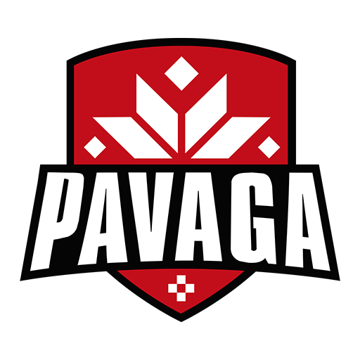

Ровно то, что решает задачу.
Без лишних экранов, функций и бюджета.
Без менеджеров между вами и разработкой. Без бесконечных пересказов задачи по цепочке. Вы обсуждаете продукт напрямую с тем, кто его проектирует и собирает.
Мы называем их партнёрами не ради красивого слова. У каждого проекта есть человек с другой стороны, который лучше всех знает свой бизнес. Мы знаем разработку, вы знаете свой продукт, клиентов и процессы. Хороший результат появляется, когда эти две стороны работают вместе.

Компьютерный клуб
Турниры, команды и рейтинги игроков — всё в одном месте. Пришли с одной идеей, но в разговоре разобрались, что клубу нужнее, и собрали платформу под реальную задачу бизнеса.
Кофейня, Минск
Приложение кофейни: электронное меню, программа лояльности, новости и акции, push-уведомления. Перенесли лояльность туда, где клиент всегда — в телефон.
Волонтёрский проект
Приложение для студентов медуниверситета: расписание, оценки, деканат, оплаты — всё в одном месте и работает офлайн. Началось как помощь одному человеку — а за первую неделю разошлось по всему вузу.
3700+ установок в App Store за первую неделю. Android-версия в тестировании.
Пять понятных этапов. Без бюрократии и бесконечных согласований.
Сначала выясняем, что действительно нужно сделать. Что сейчас не работает? Где бизнес теряет время? Что должен получить клиент на выходе? Иногда выясняется, что вам вообще не нужен тот продукт, с которым вы пришли, — и это нормально.
Определяем структуру, сценарии и формат продукта. Не начинаем писать код просто потому, что уже хочется писать код. Сначала понимаем, что именно строим.
Работаем короткими этапами и регулярно показываем результат. Небольшой сайт можно собрать за несколько дней, крупный продукт разбиваем на понятные недельные спринты. Вы всегда понимаете, что происходит и что будет дальше.
Тестируем не только глазами. Проходим реальные сценарии, ищем проблемы, исправляем и доводим продукт до состояния, в котором им можно пользоваться.
Продукт должен выйти из чата в реальный мир. Помогаем с запуском, публикацией и дальнейшими обновлениями. После релиза не исчезаем.
Расскажите о ней в двух словах — готовое ТЗ не обязательно. Опишите, что сейчас работает неудобно, что хочется изменить или какую идею давно хочется реализовать. Разберёмся вместе и предложим, с чего лучше начать.